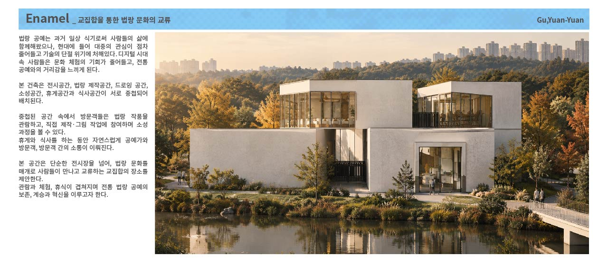
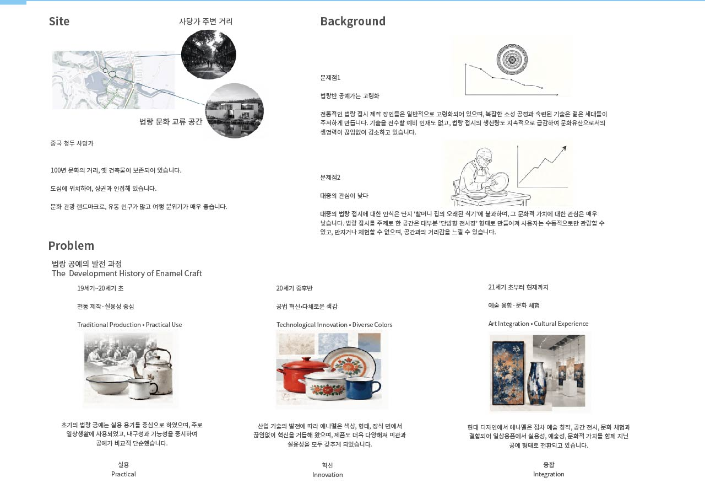
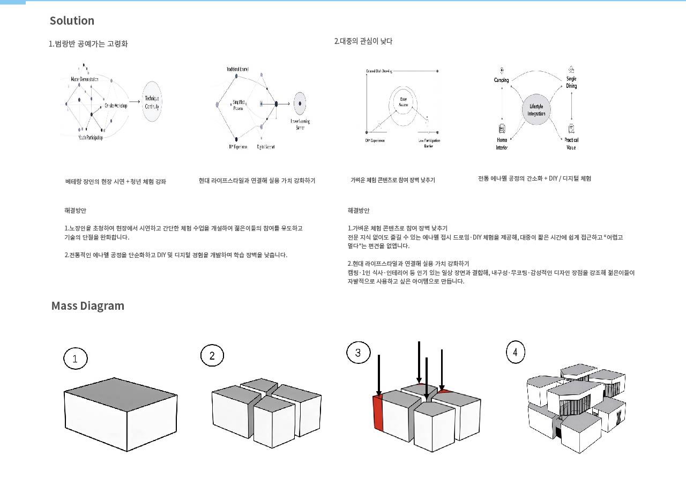
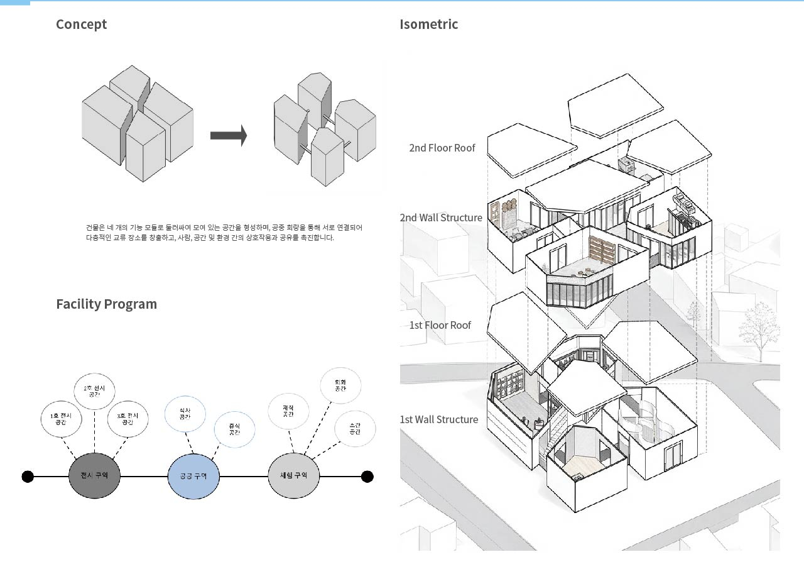
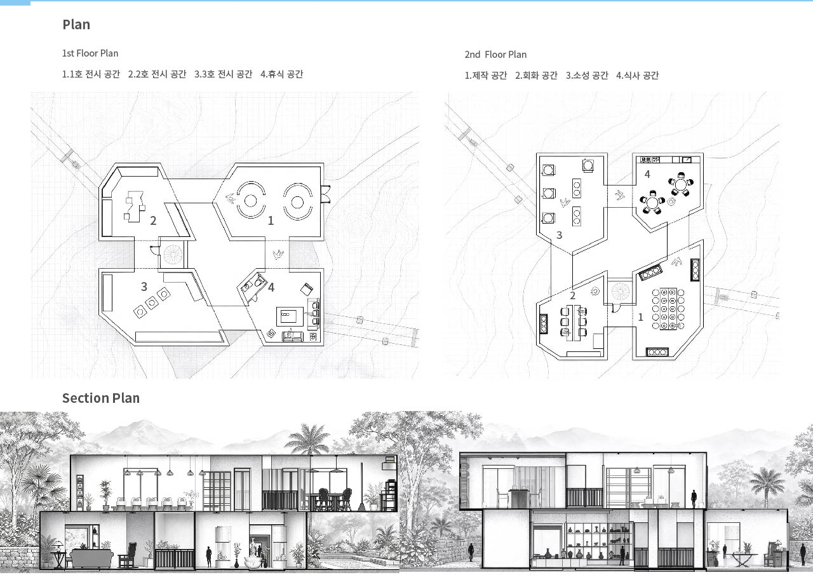
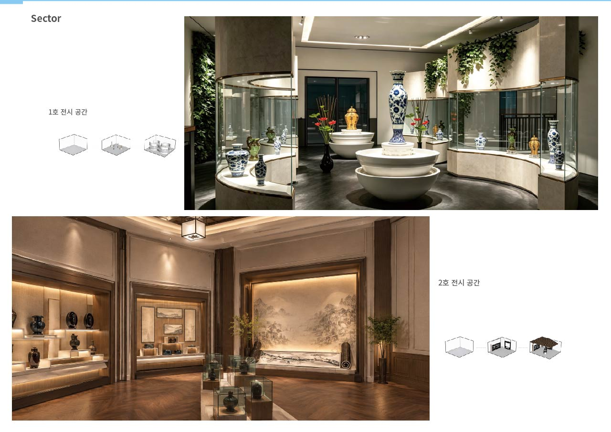
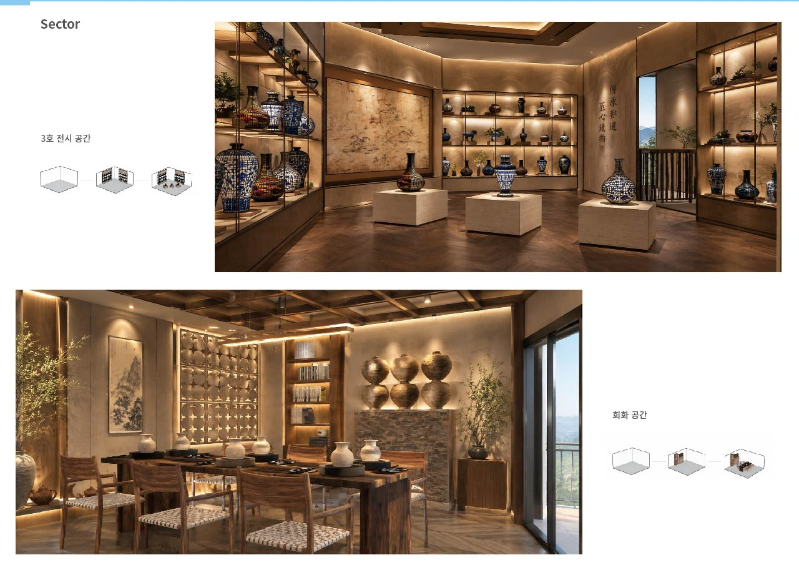
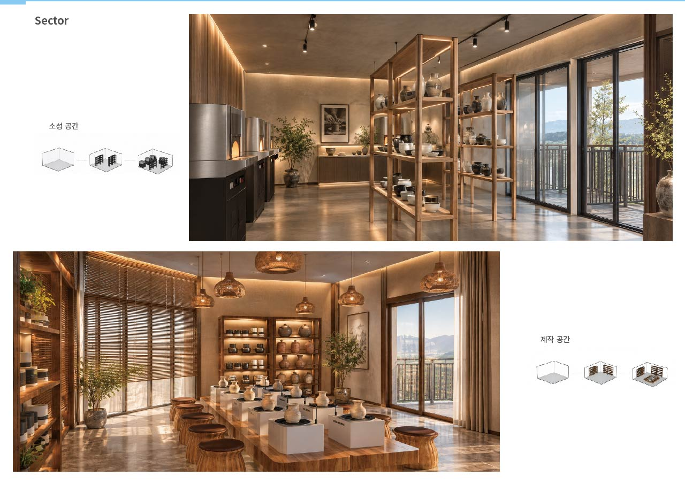
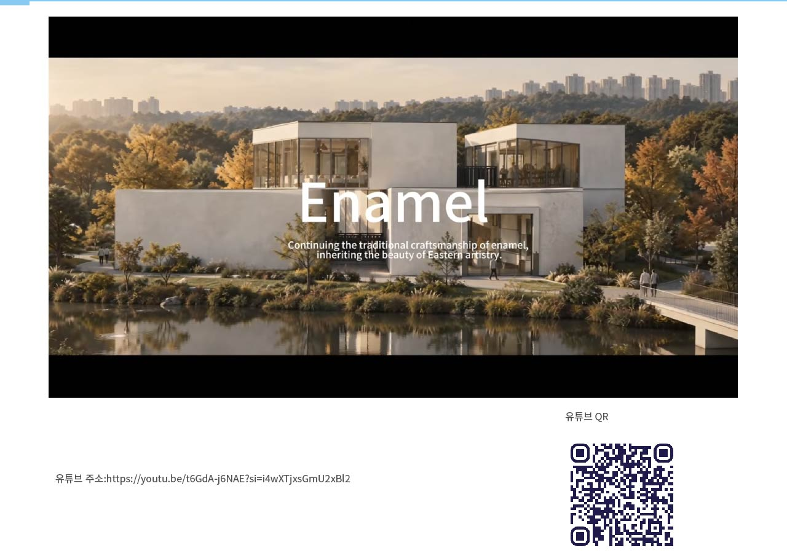

Concept
- 법랑공예
- 공간중첩
- 문화계승
법랑 공예는 과거 일상 식기로써 사람들의 삶에 함께해왔으나, 현대에 들어 대중의 관심이 점차 줄어들고 기술의 단절 위기에 처해있다. 디지털 시대 속 사람들은 문화 체험의 기회가 줄어들고, 전통 공예와의 거리감을 느끼게 된다.
본 건축은 전시공간, 법랑 제작공간, 드로잉 공간, 소성공간, 휴게공간과 식사공간이 서로 중첩되어 배치된다.
중첩된 공간 속에서 방문객들은 법랑 작품을 관람하고, 직접 제작·그림 작업에 참여하며 소성 과정을 볼 수 있다.
휴게와 식사를 하는 동안 자연스럽게 공예가와 방문객, 방문객 간의 소통이 이뤄진다.
본 공간은 단순한 전시장을 넘어, 법랑 문화를 매개로 사람들이 만나고 교류하는 교집합의 장소를 제안한다.
관람과 체험, 휴식이 겹쳐지며 전통 법랑 공예의 보존, 계승과 혁신을 이루고자 한다.
Film
Boards

Board 01

Board 02

Board 03

Board 04

Board 05

Board 06

Board 07

Board 08

Board 09